Data
Data Sources
STATCAN data sources:
https://www150.statcan.gc.ca/t1/tbl1/en/cv.action?pid=1310078301
https://www150.statcan.gc.ca/t1/tbl1/en/cv.action?pid=1310076801
https://www150.statcan.gc.ca/n1/pub/71-607-x/71-607-x2020017-eng.htm
# devtools::install_github("derekmichaelwright/agData")
library(agData) # Loads: tidyverse, ggpubr, ggbeeswarm, ggrepel
# Prep data
cutoffDate <- "2020-11-14"
areas <- c("Canada", "Quebec", "Ontario", "British Columbia",
"Alberta", "Saskatchewan", "Manitoba", "Nova Scotia",
"Newfoundland and Labrador", "New Brunswick", "Prince Edward Island",
"Northwest Territories", "Yukon", "Nunavut")
#
d1 <- read.csv("1310078301_databaseLoadingData.csv") %>%
rename(Date=1, Area=GEO, Value=VALUE) %>%
mutate(Date = as.Date(Date),
Year = as.factor(substr(Date, 1, 4)),
Month = as.factor(substr(Date, 6, 7)),
Y2020 = ifelse(Year == "2020", "2020", "<2020"),
JulianDate = lubridate::yday(Date),
Area = gsub(", place of occurrence", "", Area),
Area = factor(Area, levels = areas)) %>%
filter(Date <= cutoffDate)
d2 <- read.csv("1310076801_databaseLoadingData.csv") %>%
rename(Date=1, Age=Age.at.time.of.death, Value=VALUE, Area=GEO) %>%
mutate(Date = as.Date(Date),
Age = gsub("Age at time of death, ", "", Age),
Year = as.factor(substr(Date, 1, 4)),
Month = as.factor(substr(Date, 6, 7)),
Y2020 = ifelse(Year == "2020", "2020", "<2020"),
JulianDate = lubridate::yday(Date),
Area = gsub(", place of occurrence", "", Area),
Area = factor(Area, levels = areas)) %>%
filter(Date <= cutoffDate)
Deaths
# Create plotting function
deathPlot1 <- function(area = "Canada") {
# Prep data
vv <- as.Date(c("2010-01-01","2011-01-01","2012-01-01","2013-01-01",
"2014-01-01","2015-01-01","2016-01-01","2017-01-01",
"2018-01-01","2019-01-01","2020-01-01"))
xx <- d1 %>% filter(Area == area)
# Plot
ggplot(xx, aes(x = Date, y = Value)) +
geom_line(color = "darkred", size = 1) +
geom_vline(xintercept = vv, lty = 2, alpha = 0.5) +
scale_x_date(date_breaks = "1 year", date_labels = "%Y", minor_breaks = "1 year") +
theme_agData() +
labs(title = area, y = "Deaths", x = NULL,
caption = "\xa9 www.dblogr.com/ | Data: STATCAN")
}
Canada
mp <- deathPlot1("Canada")
ggsave("Deaths_Canada_1_01.png", mp, width = 8, height = 4)
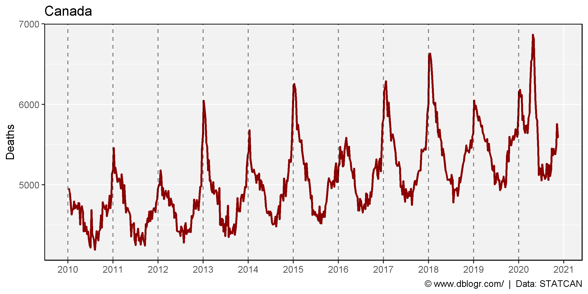
Ontario
mp <- deathPlot1("Ontario")
ggsave("Deaths_Canada_1_02.png", mp, width = 8, height = 4)
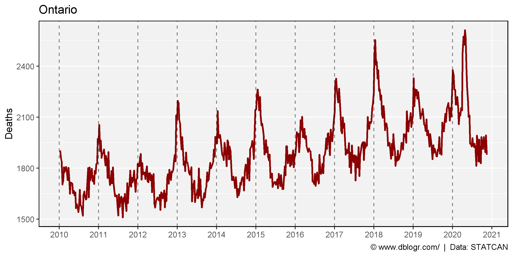
Quebec
mp <- deathPlot1("Quebec")
ggsave("Deaths_Canada_1_03.png", mp, width = 8, height = 4)
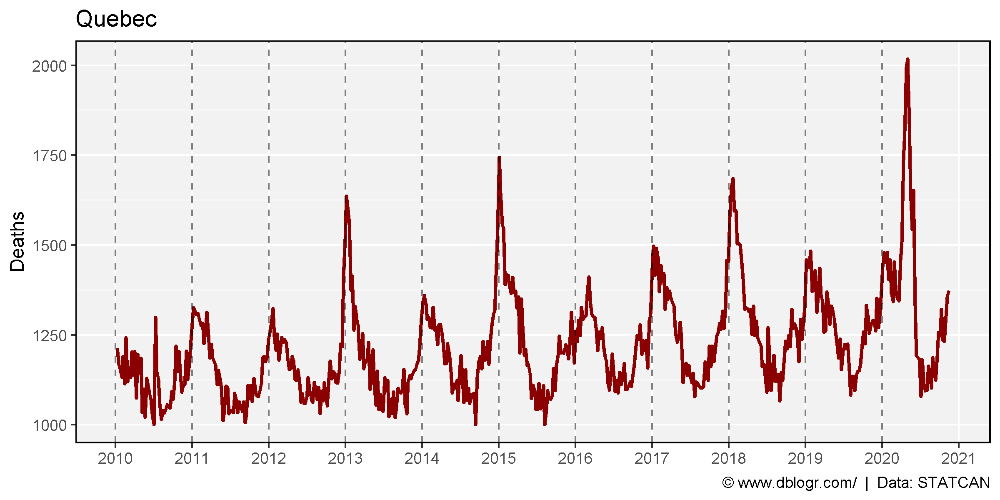
British Columbia
mp <- deathPlot1("British Columbia")
ggsave("Deaths_Canada_1_04.png", mp, width = 8, height = 4)
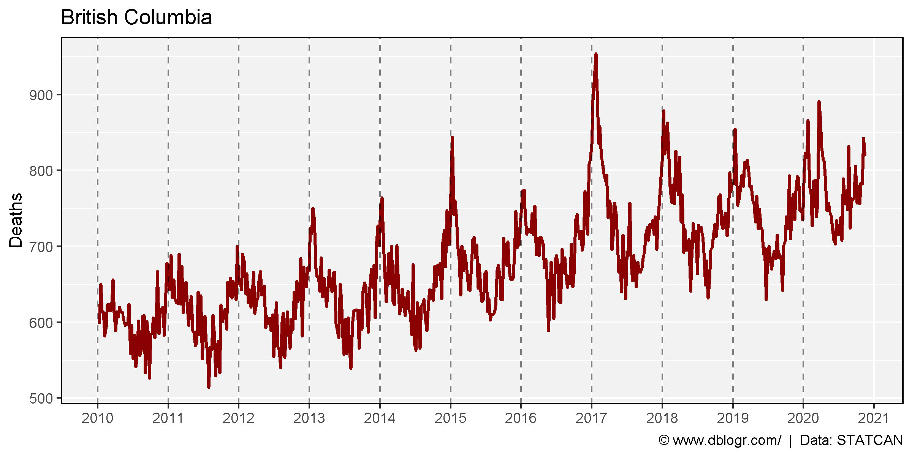
Alberta
mp <- deathPlot1("Alberta")
ggsave("Deaths_Canada_1_05.png", mp, width = 8, height = 4)
Saskatchewan
mp <- deathPlot1("Saskatchewan")
ggsave("Deaths_Canada_1_06.png", mp, width = 8, height = 4)
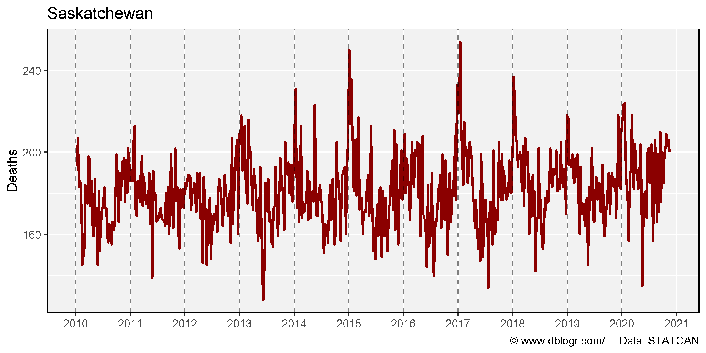
Saskatchewan
mp <- deathPlot1("Manitoba")
ggsave("Deaths_Canada_1_07.png", mp, width = 8, height = 4)
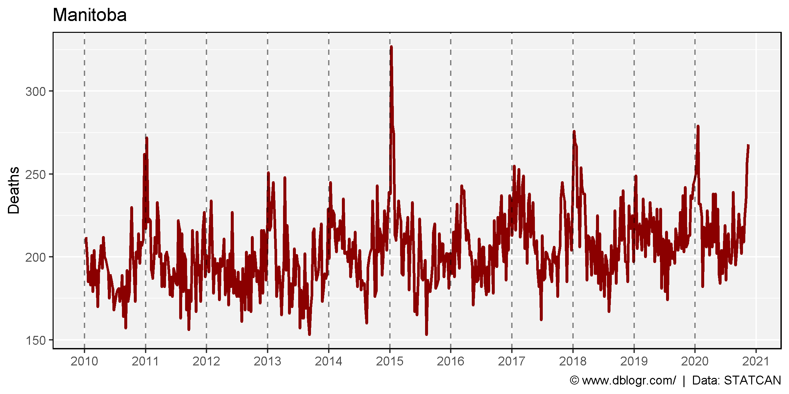
Deaths Vs. Previous Years
# Create plotting function
deathPlot2 <- function(areas) {
# Prep data
xx <- d1 %>% filter(Area %in% areas)
# Plot
mp1 <- ggplot(xx, aes(x = JulianDate, y = Value, group = Year, color = Y2020, alpha = Y2020)) +
geom_line() +
facet_wrap(Area ~ ., scales = "free_y", ncol = 5) +
scale_color_manual(name = NULL, values = c("darkgreen","darkred")) +
scale_alpha_manual(name = NULL, values = c(0.5,1)) +
theme_agData(legend.position = "bottom") +
labs(y = "Deaths Per Week")
# Prep data
xx <- d1 %>% mutate(Year = as.numeric(as.character(Year))) %>%
select(Date, Year, JulianDate, Y2020, Area, Value) %>%
arrange(Area, Date) %>%
spread(Area, Value)
for(i in 5:ncol(xx)) {
for(k in min(xx$Year):max(xx$Year)) {
xx[xx$Year == k, i] <- cumsum(xx[xx$Year == k,i])
}
}
xx <- xx %>% gather(Area, Value, 5:ncol(.)) %>%
mutate(Area = factor(Area, levels = areas)) %>%
filter(Area %in% areas)
# Plot
mp2 <- ggplot(xx, aes(x = JulianDate, y = Value / 1000, group = Year, color = Y2020, alpha = Y2020)) +
geom_line() +
facet_wrap(Area ~ ., scales = "free_y", ncol = 5) +
scale_color_manual(name = NULL, values = c("darkgreen","darkred")) +
scale_alpha_manual(name = NULL, values = c(0.5,1)) +
theme_agData(legend.position = "bottom") +
labs(y = "Thousand Deaths",
caption = "\xa9 www.dblogr.com/ | Data: STATCAN")
ggarrange(mp1, mp2, common.legend = T, legend = "bottom", align = "h")
}
Canada
mp <- deathPlot2(areas = areas)
ggsave("Deaths_Canada_2_01.png", mp, width = 20, height = 8)
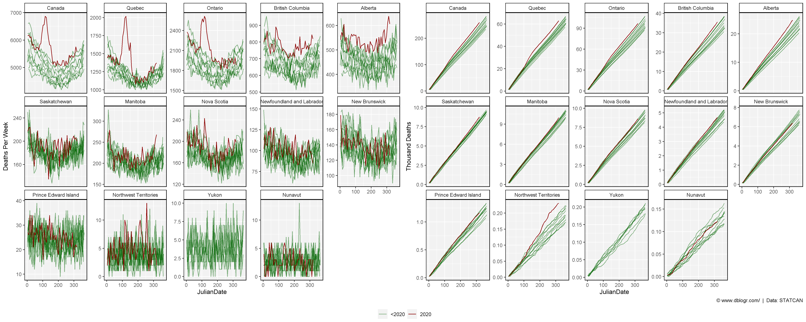
mp <- deathPlot2(areas = "Canada")
ggsave("Deaths_Canada_2_02.png", mp, width = 8, height = 4)
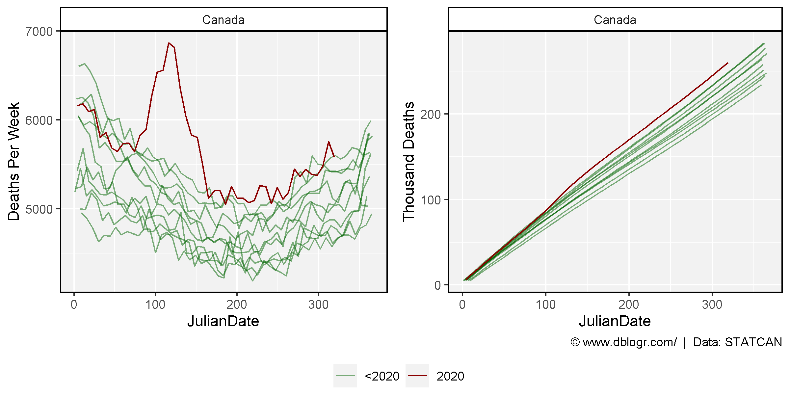
Ontario
mp <- deathPlot2(areas = "Ontario")
ggsave("Deaths_Canada_2_03.png", mp, width = 8, height = 4)
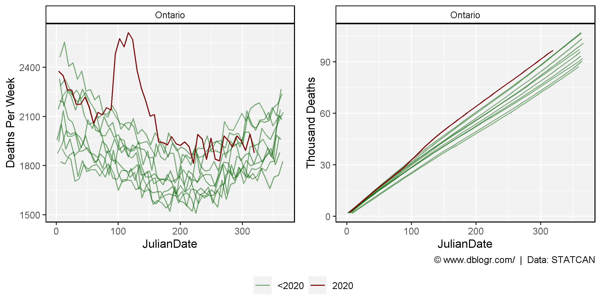
Quebec
mp <- deathPlot2(areas = "Quebec")
ggsave("Deaths_Canada_2_04.png", mp, width = 8, height = 4)
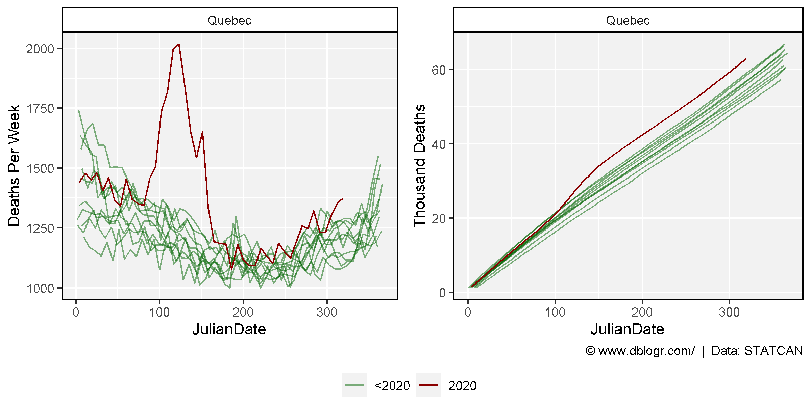
British Columbia
mp <- deathPlot2(areas = "British Columbia")
ggsave("Deaths_Canada_2_05.png", mp, width = 8, height = 4)
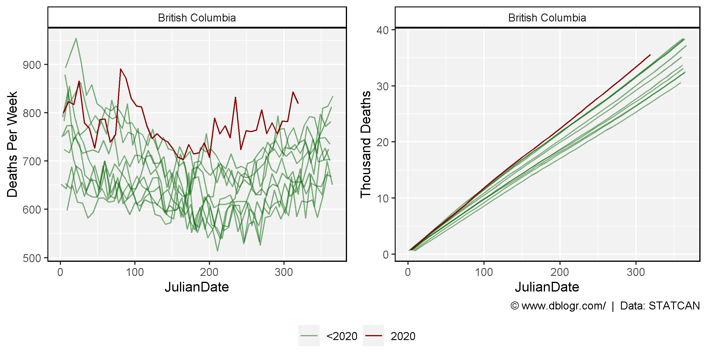
Alberta
mp <- deathPlot2(areas = "Alberta")
ggsave("Deaths_Canada_2_06.png", mp, width = 8, height = 4)
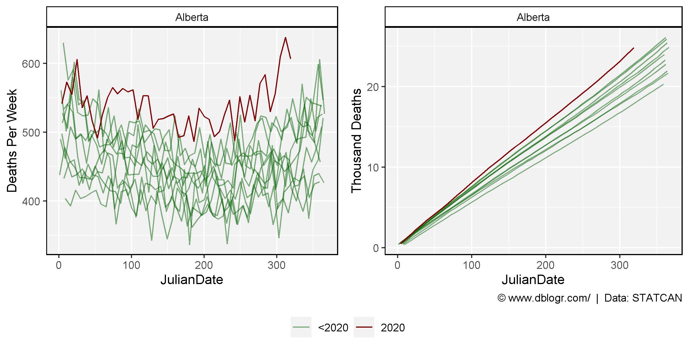
Saskatchewan
mp <- deathPlot2(areas = "Saskatchewan")
ggsave("Deaths_Canada_2_07.png", mp, width = 8, height = 4)
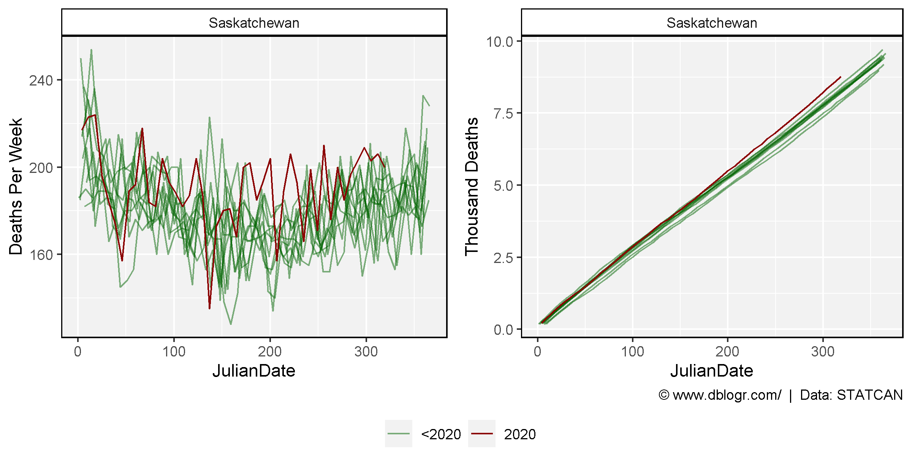
Deaths by Age Group
# Create plotting function
deathPlot3 <- function(areas = "Canada") {
# Prep data
xx <- d2 %>% filter(Area %in% areas, Sex == "Both sexes", Age != "all ages")
# Plot
ggplot(xx, aes(x = JulianDate, y = Value, group = Year, color = Y2020, alpha = Y2020)) +
geom_line() +
facet_grid(Area ~ Age, scales = "free_y") +
scale_color_manual(name = NULL, values = c("darkgreen","darkred")) +
scale_alpha_manual(name = NULL, values = c(0.3,1)) +
theme_agData(legend.position = "bottom") +
labs(y = "Deaths Per Week",
caption = "\xa9 www.dblogr.com/ | Data: STATCAN")
}
Canada
mp <- deathPlot3(areas = "Canada")
ggsave("Deaths_Canada_3_01.png", mp, width = 8, height = 4)

Eastern Canada
mp <- deathPlot3(areas = c("Ontario", "Quebec", "Nova Scotia",
"Newfoundland and Labrador", "New Brunswick"))
ggsave("Deaths_Canada_3_02.png", mp, width = 8, height = 8)
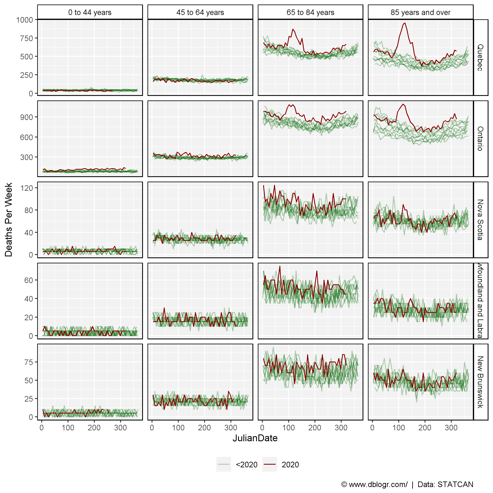
Western Canada
mp <- deathPlot3(areas = c("British Columbia","Alberta","Saskatchewan","Manitoba"))
ggsave("Deaths_Canada_3_03.png", mp, width = 8, height = 8)
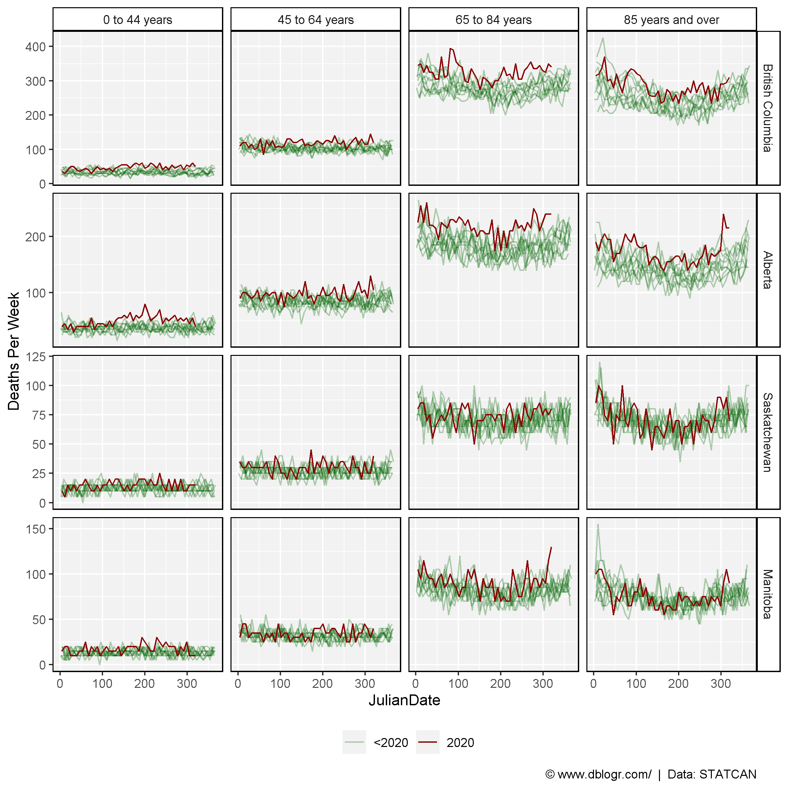
Select Provinces
mp <- deathPlot3(areas = c("Ontario", "Quebec","Saskatchewan","Alberta", "British Columbia"))
ggsave("Deaths_Canada_3_04.png", mp, width = 8, height = 8)
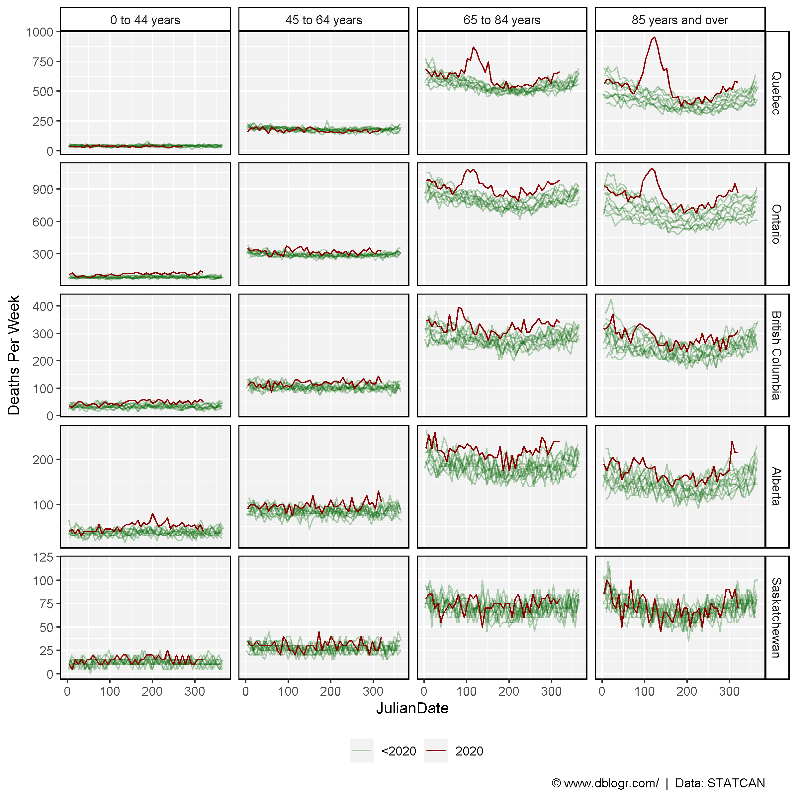
Saskatchewan vs. Quebec
mp <- deathPlot3(areas = c("Canada","Quebec","Saskatchewan"))
ggsave("Deaths_Canada_3_05.png", mp, width = 8, height = 5)
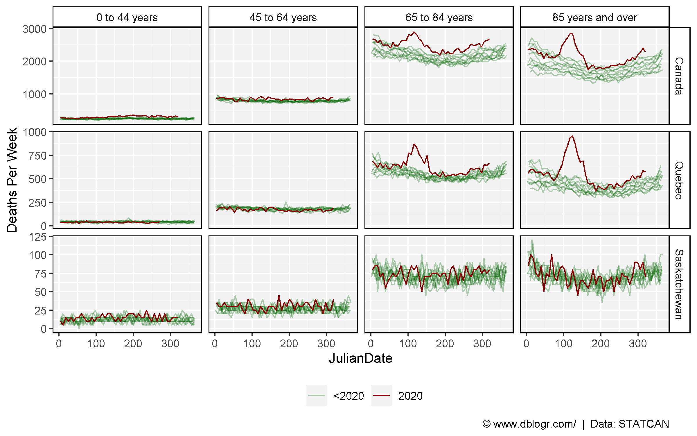
Alberta vs. Ontario
mp <- deathPlot3(areas = c("Canada","Ontario","Alberta"))
ggsave("Deaths_Canada_3_06.png", mp, width = 8, height = 5)
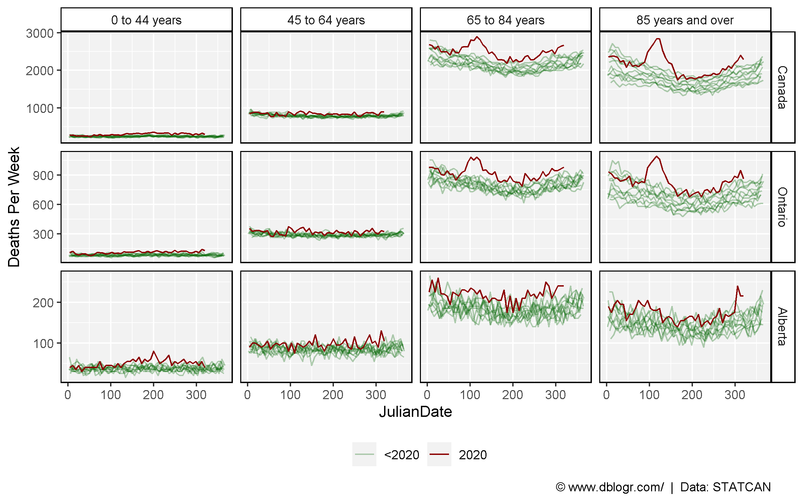
Saskatchewan
mp <- deathPlot3(areas = "Saskatchewan")
ggsave("Deaths_Canada_3_07.png", mp, width = 8, height = 4)
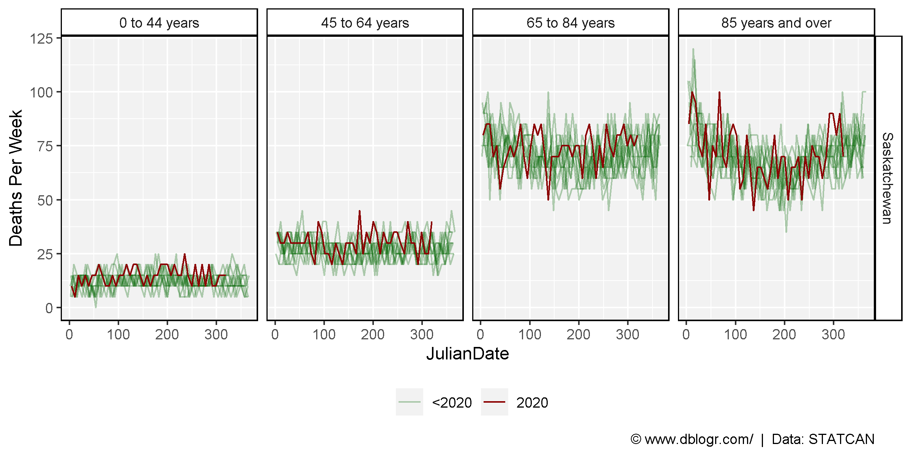
By Gender
# Prep data
xx <- d2 %>% filter(Area %in% "Canada", Sex != "Both sexes", Year == 2020)
# Plot
mp <- ggplot(xx, aes(x = JulianDate, y = Value, group = Sex, color = Sex)) +
geom_line() +
facet_grid(Area ~ Age) +
scale_color_manual(name = NULL, values = c("darkred","darkgreen")) +
scale_alpha_manual(name = NULL, values = c(0.5,1)) +
theme_agData(legend.position = "top") +
labs(y = "Deaths Per Week",
caption = "\xa9 www.dblogr.com/ | Data: STATCAN")
ggsave("Deaths_Canada_4_01.png", mp, width = 8, height = 4)
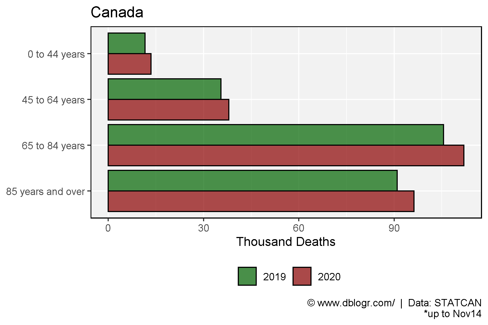
© Derek Michael Wright 2020 www.dblogr.com/